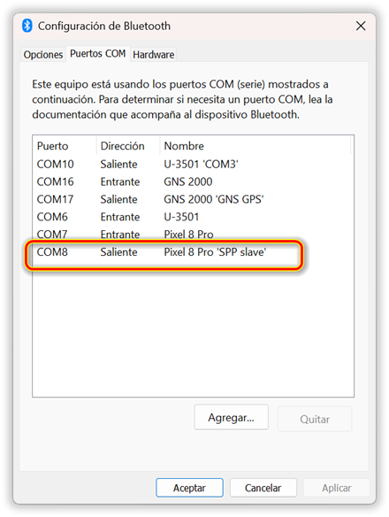
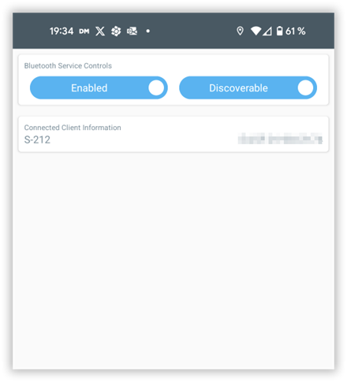
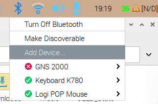
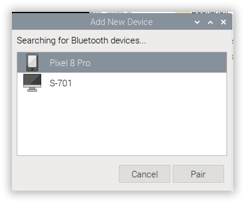
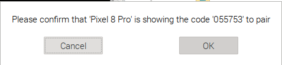
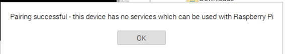
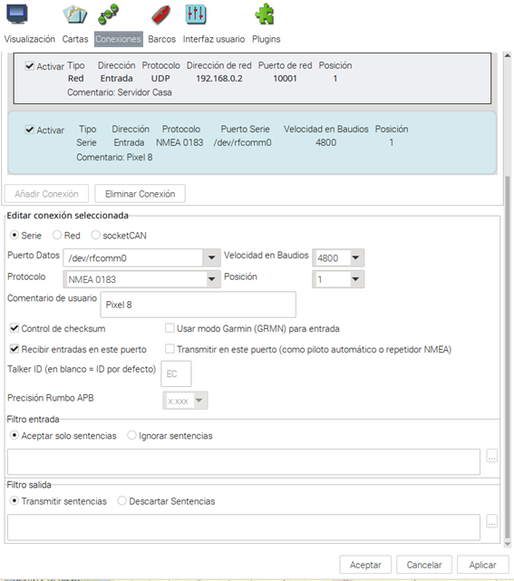
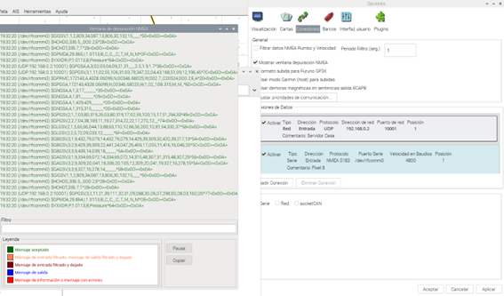

BT Pair GNSS
Bluetooth Pairing of GNSS receivers
Need instructions and screenshots for Bluetooth (possibly a pairing device screen)
Pairing with a Cell phone via Bluetooth to provide GPS data as a backup is a reasonable approach, however the cell phone needs to be charged frequently and often has to paired again. Other GPS solutions are better for primary use.
-
Install a Cell Phone Bluetooth App.
-
Turn on Bluetooth on both the Cell phone and Computer.
-
Pair the devices.
-
Enable Location services on the cell phone.
-
In Windows, Privacy & Security > Location service may need to be turned on.
-
In the Computer Bluetooth settings, if there is an option to share location services, turn it on.
-
Authorize Location sharing on the cell phone or on the Computer.
First consideration, install a mobile phone app that delivers NMEA strings via COM port (BlueTooth) such as an Android App named "Bluetooth GPS Output" available in Google play. There are likely other similar iPhone Apps. Link to app for GNSS output
with Windows or Raspbian (Bookworm 64)
Bluetooth Pairing with Windows or Raspbian (Bookworm 64) is basically the same procedure.
For both Operating Systems, if they have been paired before, delete the Bluetooth pairing from the computer and the mobile cell phone. Start the Cell Phone App and make the device discover-able and paired with the Computer. In windows it will create a SPP COM port and will be the connection for GNSS in OpenCPN. In the case of Windows it is straight forward, nothing else to do, except to setup a Serial connection in the Connection Tab, the GNSS will always be found once the Cell Phone App is started, if properly setup in OpenCPN:

with Raspberry Pi 4 with Raspbian
For Raspberry Pi 4 with Raspbian: Start the Cell Phone GNSS App and allow the Cell to be discoverable.

Click on the Raspberry Pi Bluetooth Icon and click on Add Device

Search for the device in question:

Click on Pair and follow the next screens:

If the mobile device shows the same code, click on OK

A message such as the one above appears, but is not a problem. Now proceed to setup the COM port, preferably done as “SU” user, otherwise the binding won’t be carried out. Open a command window and follow commands below:
su
password: (the os will request your password)
hcitool scan
Something like the following will appear:
XX:XX:XX:XX:XX 'Device name'
MAC address & device name
and possibly other similar information due to connected devices, identify your mobile Cell Phone (GNSS featured) and record the data.
sdptool scan XX:XX:XX:XX:XX
This is the MAC address of your device given with hcitool command, it will show many services for your mobile Cell phone, search for SPP slave and note the channel number (ch).
rfcomm bind 'device name' XX:XX:XX:XX:XX ch**
You won’t see any output, the device name is the same given in the hcitool scan, it’s MAC address (XX:XX:XX:XX:XX) and ch is the channel number given in sdptool scan as SPP slave channel.
rfcomm
it will give you something similar to
rfcommX: XX:XX:XX:XX:XX channel ch clean
When you know the COM port start OpenCPN go to Connections and make a New Connection as per attached. This type of device works with baud 4800 or 9600, much better to standardize with 4800 baud.

Connection done with 4800 baud.

In case you have to release the COM port because of any error, use the next command:
rfcomm release /dev/rfcommX
where X is the number that system is given uses to be 0, 1, 2 …
Note: In the case of Raspbian, the Mobile App GPS uses to exchange the SPP channel on every start and Raspberrry Pi won’t find the GNSS signal, so you must release of COM port with the command above, but not do do the whole procedure. Just use the sdptool to know again the SPP channel and again bind the COM port to the same last channel shown.